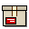

left-pad: the eleven lines npm had to un-unpublish
On the afternoon of March 22, 2016, a seventeen-line file that pads strings with spaces disappeared from the npm registry, and for about two and a half hours a large share of the JavaScript world could not install its own tools.
npm ERR! code E404That line comes from a Travis CI log that a developer with the handle silkentrance pasted into a new issue on a small GitHub repository that afternoon. The issue is still there, titled "npmjs.org tells me that left-pad is not available (404 page)". Further down the same log, npm explains itself:
npm ERR! 404 'left-pad' is not in the npm registry.
npm ERR! 404 You should bug the author to publish it (or use the name yourself!)
npm ERR! 404 It was specified as a dependency of 'line-numbers'The middle line is advice, and within fifteen minutes somebody had taken the half of it in brackets. The last line names a package that most of the people staring at this error had never knowingly installed.
The legend has four parts: an angry developer, a trademark lawyer, eleven lines of code, a broken internet. The registry's own records and the accounts from that week tell it differently in three places. The author asked to leave and was handed the command to do it. The eleven lines printed in the news stories were not the version the builds were asking for. And the package name the whole fight was about has, as far as the registry shows, never been used by the company that won it.
Seventeen lines by Azer Koçulu
Here is the whole of index.js from left-pad 0.0.3, taken from the tarball the registry serves:
module.exports = leftpad;
function leftpad (str, len, ch) {
str = String(str);
var i = -1;
ch || (ch = ' ');
len = len - str.length;
while (++i < len) {
str = ch + str;
}
return str;
}That is seventeen lines, eleven of them not blank, which is why the Register's headline said 11 and Ars Technica's said 17. Give it 7, 3 and '0' and you get "007".
Azer Koçulu, a developer then living in Oakland, made the first commit on March 14, 2014 and published three small revisions that August. He wrote a great many modules like it. The Verge counted 273 packages under his name, among them rnd, strip and random-color. The repository's history up to the day of the incident is ten commits long. Only one of them is by somebody else: on May 20, 2015, Steve Mao sent a fix titled "make the third argument work", which Koçulu merged and published as 0.0.4.
Mao's fix matters to this story in a small way. In 0.0.3, the line ch || (ch = ' ') treats a numeric zero as no argument at all, so leftpad(17, 5, 0) pads with spaces. Version 0.0.4 replaced it with if (!ch && ch !== 0) ch = ' ';. I ran both tarballs to check:
leftpad(17, 5, 0)
// 0.0.3 => " 17"
// 0.0.4 => "00017"The code that the Register printed that night, and that most retellings have printed since, is the 0.0.4 version. The builds that failed were asking for 0.0.3.
They were asking for it because of a package called line-numbers, by Simon Lydell, first published in December 2014. Its package.json named its one dependency exactly: "left-pad": "0.0.3", with no caret and no tilde. That was the newest version at the time. Babel's error-printing module, babel-code-frame, depended on line-numbers, and Babel was by then inside most front-end build chains. The Verge noted it was built into React Native as well.
So a module with, as one critic counted that week, eleven stars on GitHub was being fetched about 100,000 times every weekday and about a third as often at weekends, which is the signature of build servers and not of people. The Register quoted npm's figure of 2,486,696 downloads in the previous month. I added up npm's daily counts for February 21 to March 21 and got the same number to the digit.
Kik asks for the name kik
The dispute began with a different package. Koçulu also owned the name kik, and his versions in the registry still carry his description: "Kickstart your new projects with one command". He had first published it on October 31, 2015.
On March 11, 2016, he got an email from Bob Stratton, a patent agent working for Kik Interactive, the Canadian company behind the Kik messaging app. I could not open the full correspondence, which Kik's Mike Roberts later published on Medium, so I'm relying on the long quotations in Sean Gallagher's report for Ars Technica. Stratton said Kik wanted the name for a package it was about to release, and asked Koçulu to rename his. Koçulu declined. Stratton's second message is the one everybody remembers. It opened by saying Kik didn't mean to be unpleasant about this, in a shorter word than "unpleasant", and went on to say that if the project were released, "our trademark lawyers are going to be banging on your door and taking down your accounts and stuff like that". It ended by asking whether the two of them could compromise without involving lawyers. Koçulu answered in the same vocabulary, told Stratton not to email again and, after one more plea, named a price of $30,000.
Stratton then took the matter to npm's support desk, which is the route npm's dispute policy provides. Isaac Schlueter, who created npm and ran the company, made the call and gave the name to Kik. Schlueter's reasoning, as told to Ars, was that someone who types npm install kik "would expect to get something related to Kik." Wikipedia's account dates that decision to March 18.
Koçulu's reply to Schlueter is the hinge of the whole story. He wrote that he wanted everything gone:
I want all my modules to be deleted including my account, along with this package. I don't wanna be a part of NPM anymore. If you don't do it, let me know how do it quickly.
And npm let him know. Koçulu told Ars that the second email he got from npm "was the founder Isaac giving me a one-liner command that deletes all my stuff". Eight years later, in an essay on his own site, he wrote that npm had answered his request with a script that removed all his packages at once, without naming who sent it, and added that he had set no deadline and waited for a reply. The legend has a developer slamming a door. If these accounts and that date are right, he asked how to leave some days before he left, and the command he ran on Tuesday the 22nd came from npm.
To be fair to npm, its own post-mortem says the transfer would have broken nothing. Under the dispute policy, Koçulu's existing kik versions would have stayed installable and Kik would have published under a new major version. Nobody at npm, and by his account not Koçulu either, seems to have asked what else was on the list of 273.
The afternoon left-pad was gone
The registry stamped it all. All times here are Pacific, converted from the registry's UTC.
At 2:27 PM and 15 seconds, left-pad was unpublished by the user azer. That timestamp survives because a commenter pasted the registry's record into the GitHub issue. Koçulu wrote later that he ran the script and left his desk for a few minutes, and that within ten a friend told him he was on Twitter "for some reason". npm says that shortly after 2:30 it began seeing hundreds of failed installs a minute.
At 2:42 PM, fifteen minutes after the deletion, a left-pad 1.0.0 appeared. Cameron Westland had taken the source from GitHub and published it under the vacant name, which the rules of the day allowed anyone to do. The registry's record of that release has since been rewritten under npm's own account, so the attribution rests on Westland's note in the issue thread, which begins: "Yeah I published a 1.0.0 to try to resolve the dependency." It didn't resolve it. line-numbers wanted 0.0.3 and nothing else, and npm's firmest rule was that a version number, once used, could never be published again. A registry record pasted into the same thread shows the package unpublished again at 2:47, this time by Westland's account, and the registry has a 0.0.9 under that account at 2:51. I read those as a second attempt at a version number that would satisfy the pin. It was still not 0.0.3.
The next repair came from Babel. At 3:12 PM, Sebastian McKenzie published babel-code-frame 6.7.3. Its dependency list is the same as the previous version's with one line removed: line-numbers is gone. Babel had cut itself free of the whole chain 45 minutes after the deletion.
By 3:40, Koçulu's explanation, a Medium post called "I've Just Liberated My Modules", had been submitted to Hacker News. Its most quoted sentence is this one:
This situation made me realize that NPM is someone's private land where corporate is more powerful than the people, and I do open source because, Power To The People.
At 4:05 PM npm announced that it would do the thing its own rule forbade. The Register quotes Laurie Voss, npm's CTO, calling the step "un-un-publishing" and saying the company had chosen the needs of the many over the wishes of one author. npm's post-mortem says the original 0.0.3 was re-published from a backup and that the work was finished by 4:55. Westland explained on Hacker News that evening that the request to restore it had been theirs, as the name's new maintainer, and that npm had checked the restored code was exactly the original, so that nothing could be slipped in.
You can still see the seam. The registry's record for left-pad 0.0.3 lists Westland as its publisher and gives it the same timestamp as 0.0.9, to the millisecond: 2:51 PM on March 22, 2016, two hours before npm says the restore was done. The code file inside the tarball is dated August 15, 2014. The record says the licence is WTFPL, and the package.json inside says BSD.
While that was going on, the other names were being picked up by strangers. At 4:52 PM somebody published a kik 1.0.1 whose description is "Damn you Kik". A Hacker News commenter pointed out that names like map, alert and iframe were now free for anyone to fill with any code they liked, to be run on the next npm install. npm's post-mortem says the other 272 packages were adopted by community members, some as forks and some as empty placeholders put there to keep worse people out.
The next day Kik's Mike Roberts published the emails. The Register quoted his apology for "creating any impression that this was anything more than a polite request", and the Verge noted that Kik's own build had broken on Tuesday along with everyone else's. In the GitHub issue, in a comment GitHub dates March 23, Steve Mao asked for the repository, "since I'm the only other author of the module". Koçulu replied that Mao was the new owner.
Why one pinned package stopped Babel
The argument that week was about size. David Haney's essay "NPM & left-pad: Have We Forgotten How To Program?" went up the day after and collected 1,725 points on Hacker News. Haney had found a one-line isArray package with 18 million downloads in a month, and his verdict on anyone who couldn't write such a function in five minutes was that "you don't actually know how to code."
The other side had been put the summer before, when Sindre Sorhus was asked to justify one-line modules and answered that line count has nothing to do with whether code deserves to be a module. I see four forces behind the outage, and I'd argue size is the weakest of them.
The language had no way to pad a string. That is why the function existed at all, in npm and in every codebase that hadn't heard of npm. The TC39 proposal to add one notes that "nearly every app in FirefoxOS had implemented a left pad function". That proposal was already well along. Its README records that the names padStart and padEnd were settled at the committee's November 2015 meeting, four months before anything went missing.
The dependency was pinned and fetched fresh. An exact version in someone else's package.json, several levels below yours, is invisible until it fails, and the weekday download curve shows how many builds were pulling every package from the registry every time. If left-pad had been five thousand lines long it would have failed in the same way.
Deleting was a right. npm let any author remove any version at any time, for what the post-mortem calls "historical reasons", and a name emptied that way went straight back into the pool. The rule against reusing version numbers, which is a good rule, then guaranteed that nobody outside npm could repair the damage.
And there was one namespace, run by one company, which had to decide who deserved a three-letter word. npm insisted the decision was editorial, not legal. Koçulu's point was that it could be made at all.
Where left-pad, kik and unpublish went
The right to unpublish went to npm's support desk. A week after the outage, on March 29, npm announced that a version more than 24 hours old could no longer be removed by its author; you had to write to support, who would refuse if anything depended on it. A fully removed package would be replaced by a placeholder so that the name could not be squatted. The policy as it reads now is looser on time and stricter on everything else: nothing in the registry may depend on the package in any case, and then you have 72 hours from publishing, or longer only if it had under 300 downloads in the last week and has a single owner.
Padding was approved for the language two months later. The committee's list of finished proposals has string padding, championed by Jordan Harband, reaching stage 4 at the May 2016 meeting and it shipped in ES2017 the following year. The notes of that meeting don't mention left-pad at all. So '7'.padStart(3, '0') now does the job with nothing installed.
left-pad outlived its replacement. Mao took over the package and released 1.1.0 on May 1, 2016. The last version, 1.3.0 from April 2018, pads by doubling the fill string and so does in a handful of steps what the original did one character at a time. Every version in the registry now carries the same deprecation notice, "use String.prototype.padStart()". Its traffic has a strange shape. The day after the outage, downloads fell from about 100,000 to 36,971, which I put down to Babel's fix, and through April and May weekdays ran mostly between 20,000 and 35,000. When I checked npm's counter in mid-November 2026, the deprecated package had been downloaded 2,295,504 times in the previous seven days, which is nearly what it managed in the whole month before it vanished.
The name kik was never used. This is the finding I did not expect. On March 23, 2016, the day after the outage, the registry shows npm publishing a "security" placeholder under the name, with a description saying it "is not currently in use" and that npm will "probably give it to you if you want it." Thirteen days later, on the evening of April 4, Pacific time, Kik published its bot library for Node. It went out as @kikinteractive/kik, under the company's own scope, where no dispute had ever been needed. The registry's record for plain kik lists Kik Interactive as the maintainer, Koçulu's old versions, the stranger's protest release, an empty release from an npm staff account and two placeholders. It lists nothing published by Kik.
Koçulu left, first npm and then more. In the days after the outage he gave his repositories to volunteers. In the 2024 essay he says that a few months later he quit his job, left the United States for good and spent a year travelling, and that the part of him that cared about open source "was gone".
The takeaway
left-pad is remembered as a story about small modules, and I think that is the least of what happened. A company wanted a name. A registry that called itself a community resource turned out to have an owner who could reassign names, and an author who had taken "it's your code" at face value asked for the delete command and got it. The builds broke because of one exact version pin and a rule that made the gap impossible to fill. Then npm set aside that rule the same afternoon and wrote a new one within the week. Under the new rule the code you publish stays published, and whether it can come down is for npm to decide. Koçulu had called the registry someone's private land. npm's answer, in effect, was that it is, and that a build system can't work any other way.
The error message at the top of this essay offered two remedies: bug the author, or use the name yourself. Both were tried within fifteen minutes on March 22, and since the following week the second has required a letter to npm support. The name left-pad is still there, deprecated and fetched a couple of million times a week. The name kik is there too, and what it installs is a placeholder.
What I couldn't verify
- I could not open either Medium post: Azer Koçulu's "I've Just Liberated My Modules" or Mike Roberts's "A discussion about the breaking of the Internet", which holds the emails. Every line I quote from them comes by way of Ars Technica, The Register, The Verge or people quoting them on Hacker News that week, and neither post is linked.
- That npm sent Koçulu the command that deleted his packages rests on Koçulu's own account: he told Ars Technica in 2016 that it came from Isaac Schlueter, and his 2024 essay says only that npm provided a script. npm's post-mortem doesn't mention it, and I have not seen the email. The March 18 date for npm's decision comes only from Wikipedia's summary of the emails, and I don't know what day Koçulu asked to leave.
- Sources disagree on how many packages were removed: npm's post-mortem and The Verge say 273, The Register said more than 250 that night, and Koçulu's 2024 essay says there were more than 350.
- I read the GitHub issue through a text rendering of the page, so the 2:27 PM unpublish by Koçulu and the 2:47 PM unpublish by Westland's account come from registry records pasted there, not from the registry itself. That the 2:47 unpublish and the 0.0.9 release were a second attempt at a usable version number, that 0.0.3 shares 0.0.9's timestamp because of how npm restored it, and that left-pad's downloads fell because of Babel's fix are my inferences.
- That Kik never published anything under the name kik is what the registry's version list shows now; a release that was published and later removed would not appear there, and I found no statement from Kik or npm about why a placeholder went up the day after the name was transferred.
- I could not find the date on which left-pad was marked deprecated; the registry shows the notice on every version but not when it was added.
Sources and further reading
- "npmjs.org tells me that left-pad is not available (404 page)", issue 4 on the left-pad repository, opened by silkentrance, March 22, 2016 (archived)
- npm registry record for left-pad (publish times, publishers, tarballs and the deprecation notice)
- npm registry record for kik and for @kikinteractive/kik (archived)
- npm registry records for line-numbers and babel-code-frame (archived)
- kik, left-pad, and npm, Isaac Z. Schlueter, npm blog, March 23, 2016 (archived)
- changes to npm's unpublish policy, npm blog, March 29, 2016 (archived)
- npm Unpublish Policy, npm documentation, current version (archived)
- left-pad, Azer Koçulu, June 8, 2024 (archived)
- "I've Just Liberated My Modules", Azer Koçulu, Medium, March 22, 2016 (not linked: I could not open it)
- "A discussion about the breaking of the Internet", Mike Roberts, Medium, March 23, 2016 (not linked: I could not open it)
- Rage-quit: Coder unpublished 17 lines of JavaScript and "broke the Internet", Sean Gallagher, Ars Technica, March 25, 2016 (archived)
- How one developer just broke Node, Babel and thousands of projects in 11 lines of JavaScript, Chris Williams, The Register, March 23, 2016 (archived)
- How an irate developer briefly broke JavaScript, Paul Miller, The Verge, March 24, 2016 (archived)
- Hacker News discussion of "I've Just Liberated My Modules", March 22, 2016, with comments by Cameron Westland and Laurie Voss (archived)
- NPM & left-pad: Have We Forgotten How To Program?, David Haney, March 23, 2016 (archived)
- "One-line node modules", question to Sindre Sorhus, July 2015 (archived)
- String.prototype.padStart / padEnd proposal, Kevin Grandon and Jordan Harband, TC39 (archived)
- Finished proposals, TC39 (archived)
- TC39 meeting notes, May 25, 2016 (archived)
- npm left-pad incident, Wikipedia (archived)
Spot a mistake? Open an issue and it will be checked and corrected.
View source · Edit history